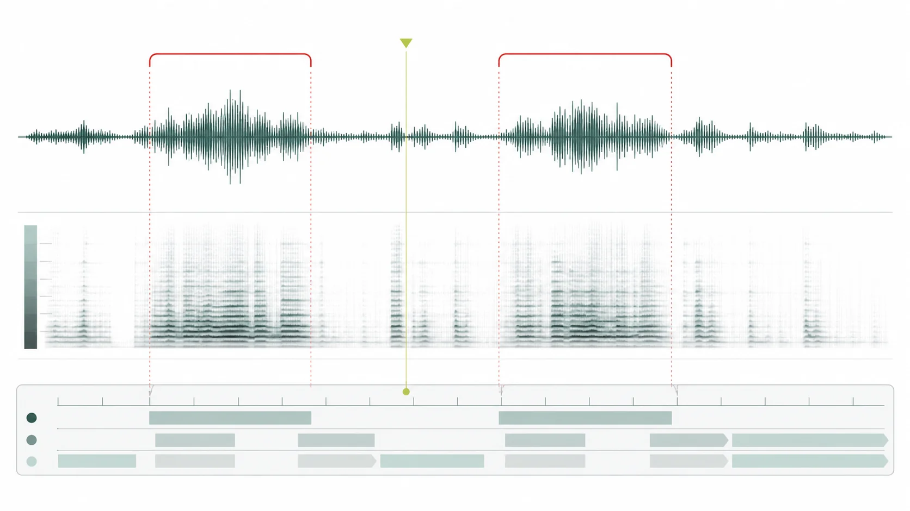

第一頁：重複音與音階片段雙吐練習
00:00–00:40 · 雙吐
影片資料：部分核實；片段起訖依既有核對紀錄標註。平台影片可能變更，請以原站為準。
前往原站觀看（另開分頁） ↗聆聽與觀察
循已標註的時間段觀看原站影片，對照技法與練習內容。目前資料仍少，未具備完整的示範、字幕及可用譜例庫。
00:00–00:40 · 雙吐
影片資料：部分核實；片段起訖依既有核對紀錄標註。平台影片可能變更，請以原站為準。
前往原站觀看（另開分頁） ↗00:40–01:07 · 雙吐
影片資料：部分核實；片段起訖依既有核對紀錄標註。平台影片可能變更，請以原站為準。
前往原站觀看（另開分頁） ↗本站暫未提供可獨立使用的完整譜例、逐字稿或字幕。新增時須先核對版本及授權；已有文章可作研讀參考，不能代替樂譜與教師示範。
閱讀作品專題 →